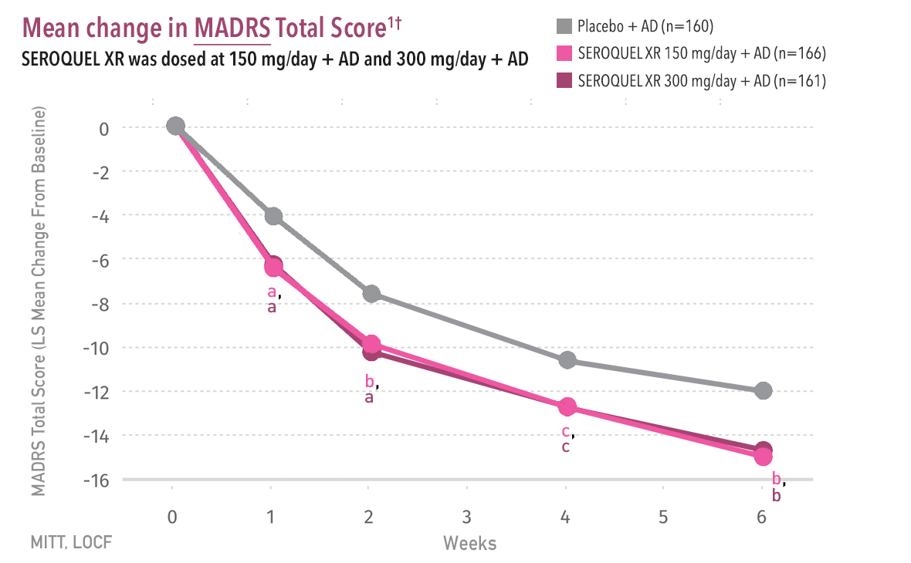
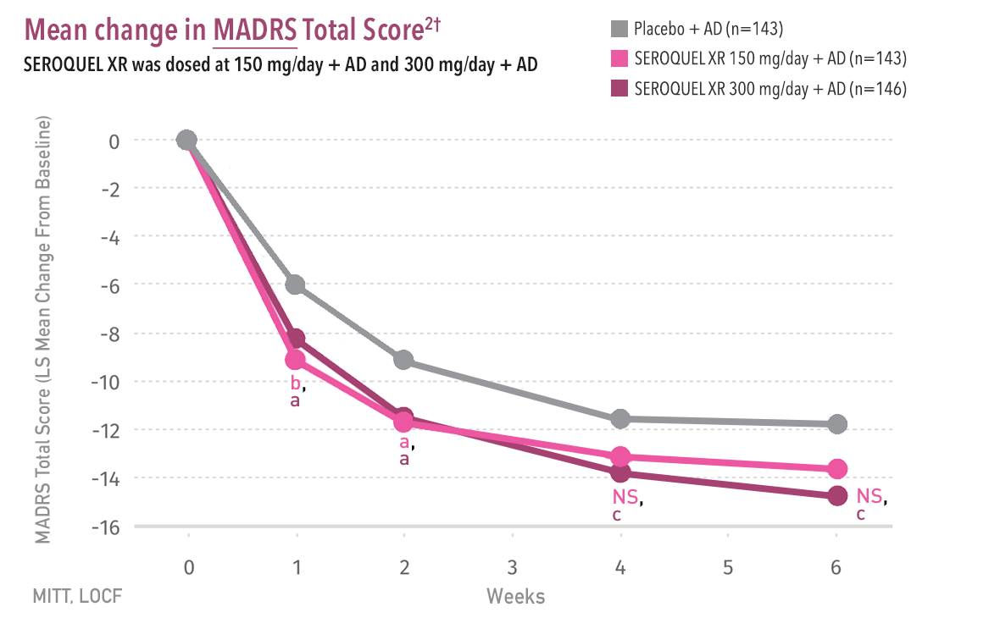
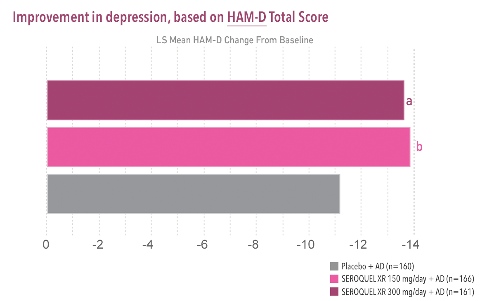
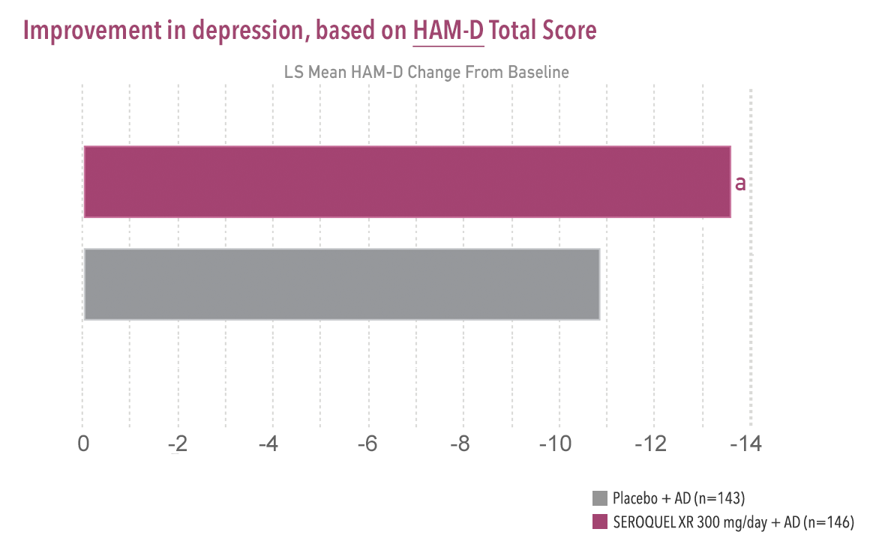

- Bauer et al study design 
- El-Khalili et al study design 
- 
- 
Important Safety Information About SEROQUEL XR® (quetiapine fumarate)
Increased Mortality in Elderly Patients with Dementia-Related Psychosis:
Elderly patients with dementia-related psychosis treated with antipsychotic drugs are at an increased risk of
death. SEROQUEL XR is not approved for the treatment of patients with dementia-related psychosis.
Suicidal Thoughts and Behavior:
Antidepressants increased the risk of suicidal thoughts and behavior in children, adolescents, and young adults in short-term studies. These studies did not show an increase in the risk of suicidal thoughts and behavior with antidepressant use in patients over age 24; there was a reduction in risk with antidepressant use in patients aged 65 and older. In patients of all ages who are started on antidepressant therapy, monitor closely for worsening, and for emergence of suicidal thoughts and behaviors. Advise families and caregivers of the need for close observation and communication with the prescriber. SEROQUEL XR is not approved for use in pediatric patients under ten years of age.
Contraindication
Hypersensitivity to quetiapine or to any excipients in the SEROQUEL XR formulation. Anaphylactic reactions have been reported in patients treated with SEROQUEL XR.
Cerebrovascular Adverse Reactions, Including Stroke, in Elderly Patients with Dementia-Related Psychosis:
In placebo-controlled trials with risperidone, aripiprazole, and olanzapine in elderly subjects with dementia,
there was a higher incidence of cerebrovascular adverse reactions (cerebrovascular accidents and transient ischemic attacks),
including fatalities, compared to placebo-treated subjects.
SEROQUEL XR is not approved for the treatment of patients with
dementia-related psychosis.
Neuroleptic Malignant Syndrome (NMS): A potentially fatal symptom complex, sometimes referred to as NMS, has been reported in association with administration of antipsychotic drugs, including SEROQUEL XR. Rare cases of NMS have been reported with SEROQUEL XR. Clinical manifestations of NMS are hyperpyrexia, muscle rigidity, altered mental status, and evidence of autonomic instability (irregular pulse or blood pressure, tachycardia, diaphoresis, and cardiac dysrhythmia). Additional signs may include elevated creatine phosphokinase, myoglobinuria (rhabdomyolysis), and acute renal failure. Management should include immediate discontinuation of antipsychotic drugs and other drugs not essential to concurrent therapy, intensive symptomatic treatment, and medical monitoring, and treatment of any concomitant serious medical problems.
Metabolic Changes:
Atypical antipsychotic drugs have been associated with metabolic changes that include hyperglycemia/diabetes mellitus, dyslipidemia, and body weight gain. In some patients, a worsening of more than one of the metabolic parameters of weight, blood glucose, and lipids was observed in clinical studies. Changes in these metabolic profiles should be managed as
clinically appropriate.
- Hyperglycemia and Diabetes Mellitus: Hyperglycemia, in some cases extreme and associated with ketoacidosis, hyperosmolar coma, or death, has been reported in patients treated with atypical antipsychotics, including SEROQUEL XR. The relationship of atypical use and glucose abnormalities is complicated by the possibility of increased risk of diabetes in the schizophrenic population and the increasing incidence of diabetes in the general population. However, epidemiological studies suggest an increased risk of treatment-emergent, hyperglycemia-related adverse reactions in patients treated with atypical antipsychotics. Patients starting treatment with atypical antipsychotics who have or are at risk for diabetes should undergo fasting blood glucose testing at the beginning of and periodically during treatment. Patients who develop symptoms of hyperglycemia should also undergo fasting blood glucose testing. Any patient treated with atypical antipsychotics should be monitored for symptoms of hyperglycemia including polydipsia, polyuria, polyphagia, and weakness. In some cases, hyperglycemia has resolved when the atypical antipsychotic was discontinued; however, some patients required continuation of antidiabetic treatment despite discontinuation of the suspect drug.
- Dyslipidemia: Undesirable alterations in lipids have been observed with SEROQUEL XR use. Increases in total cholesterol, LDL-cholesterol and triglycerides, and decreases in HDL-cholesterol have been reported in clinical trials. Appropriate clinical monitoring is recommended, including fasting blood lipid testing at the beginning of and periodically during treatment.
-
Weight Gain: Increases in weight have been observed in clinical trials. Patients receiving
SEROQUEL XR should receive regular monitoring of weight.
Tardive Dyskinesia (TD): TD, a potentially irreversible syndrome of involuntary dyskinetic movements, may develop in patients treated with antipsychotic drugs. The risk of developing TD and the likelihood that it will become irreversible are believed to increase as the duration of treatment and total cumulative dose of antipsychotic drugs administered to the patient increase. Although much less commonly, TD can develop after relatively brief treatment periods at low doses or even after treatment discontinuation. TD may remit, partially or completely, if antipsychotic treatment is withdrawn. SEROQUEL XR should be prescribed in a manner that is most likely to minimize the occurrence of TD, and discontinuation should be considered if signs and symptoms of TD occur.
Hypotension: SEROQUEL XR may induce orthostatic hypotension with associated dizziness, tachycardia, and syncope, especially during the initial dose titration period and should be used with caution in patients predisposed to hypotension or with known cardiovascular or cerebrovascular disease.
Leukopenia, Neutropenia, and Agranulocytosis: Leukopenia, neutropenia, and agranulocytosis (including fatal cases), have been reported temporally related to atypical antipsychotics, including SEROQUEL XR. Patients with a pre-existing low white blood cell (WBC) count or a history of drug-induced leukopenia/neutropenia should have their complete blood count monitored frequently during the first few months of therapy. In these patients, SEROQUEL XR should be discontinued at the first sign of a decline in WBC absent other causative factors. Patients with neutropenia should be carefully monitored, and SEROQUEL XR should be discontinued in any patient if the absolute neutrophil count is <1000/mm3.
Cataracts: Examination of the lens by methods adequate to detect cataract formation, such as slit lamp exam or other appropriately sensitive methods, is recommended at initiation of treatment or shortly thereafter, and at 6-month intervals during chronic treatment.
QT Prolongation: Postmarketing cases show increases in QT interval in patients who overdosed on quetiapine, in patients with concomitant illness, and in patients taking medicines known to cause electrolyte imbalance or increase the QT interval. Avoid use with drugs that increase the QT interval and in patients with risk factors for prolonged QT interval.
Seizures: SEROQUEL XR should be used cautiously in patients with a history of seizures or with conditions that potentially lower the seizure threshold (eg, Alzheimer’s dementia).
Potential for Cognitive and Motor Impairment: Since SEROQUEL XR has the potential to impair judgment, thinking, or motor skills, patients should be cautioned about performing activities requiring mental alertness, such as operating a motor vehicle or operating hazardous machinery, until they are reasonably certain that SEROQUEL XR therapy does not affect them adversely.
Body Temperature Regulation: Disruption of the body’s ability to reduce core body temperature has been attributed to antipsychotics. Appropriate care is advised for patients who may exercise strenuously, be exposed to extreme heat, receive concomitant medication with anticholinergic activity, or be subject to dehydration.
Dysphagia: Esophageal dysmotility and aspiration have been associated with antipsychotic drug use. Use caution in patients at risk for aspiration pneumonia. Aspiration pneumonia is a common cause of morbidity and mortality in elderly patients, in particular those with advanced Alzheimer’s dementia.
Warnings and Precautions Also Include: The risk of hypothyroidism, hyperprolactinemia, and discontinuation syndrome.
Common Adverse Reactions: The most commonly observed adverse reactions (incidence ≥5% and twice placebo) associated with the use of SEROQUEL XR versus placebo in clinical trials for all adult indications were somnolence (25%-52% vs 9%-13%), dry mouth (12%-40% vs 1%-8%), constipation (6%-11% vs 3%-6%), dizziness (10%-13% vs 4%-11%), increased appetite (2%-12% vs 0%-6%), dyspepsia (2%-7% vs 1%-4%), weight gain (3%-7% vs 0%-1%), fatigue (3%-14% vs 2%-4%), dysarthria (2%-5% vs 0%), and nasal congestion (2%-5% vs 1%).
Please read Prescribing Information, including Boxed WARNINGS.
You are encouraged to report negative side effects of prescription drugs to the FDA. Visit www.FDA.gov/medwatch or call 1-800-FDA-1088.
The product information is intended for US health care professionals only.
SEROQUEL XR is a registered trademark of the AstraZeneca group of companies.
©2015 AstraZeneca. All rights reserved. 3086417 Last Updated 2/15
Montgomery-Åsberg Depression Rating Scale (MADRS)1
- Used for the evaluation of symptoms of depression in adults and for the assessment of changes in these symptoms
- Each of the 10 items is rated on a scale of 0 to 6
- Individual item scores are added to form a Total Score
- Total Scores range from 0 to 60 points, with lower scores showing improvement
| MADRS 10 Items | |
| Apparent sadness | Reported sadness |
| Inner tension | Reduced sleep |
| Reduced appetite | Concentration difficulties |
| Lassitude | Inability to feel |
| Pessimistic thoughts | Suicidal thoughts |
- Montgomery SA, Åsberg M. A new depression scale designed to be
sensitive to change. Br J Psychiatry. 1979;134:382-389.
References
- EI-Khalili N, Joyce M, Atkinson S, et al. Extended-release quetiapine fumarate (quetiapine XR) as adjunctive therapy in major depressive disorder (MDD) in patients with an inadequate response to ongoing antidepressant treatment: A multicentre, randomized, double-blind, placebo-controlled study.
lnt J Neuropsychopharmacol. 2010;13(7):917-932. - Bauer M, Pretorius HW, Constant EL, Earley WR, Szamosi J, Brecher M. Extended-release quetiapine as adjunct to an antidepressant in patients with major depressive disorder: Results of a randomized, placebo-controlled, double-blind study. J Clin Psychiatry. 2009;70(4):540-549.
Bauer et al study design
Data from a 6-week, multicenter, double-blind, randomized, parallel-group,
placebo-controlled adjunctive therapy trial in the treatment of patients with
MDD who had an inadequate response to at least one antidepressant.
Inadequate response was defined as having continued depressive symptoms for
the current episode (HAM-D17 Total Score of ≥20 and a HAM-D item 1
[depressed mood] score ≥2) despite using an antidepressant for ≥6 weeks at
or above the minimally effective labeled dose.
Antidepressant treatment prior to study entry included: the selective
serotonin reuptake inhibitors (SSRIs) Paxil® (paroxetine), Prozac®
(fluoxetine), Zoloft®(sertraline), Lexapro® (escitalopram), Celexa®
(citalopram); the serotonin–norepinephrine reuptake inhibitors (SNRIs)
Cymbalta® (duloxetine) and Effexor® (venlafaxine); the tricyclic
antidepressant (TCA) amitriptyline; and Wellbutrin® (bupropion). All brand
names are registered trademarks of their respective owners. Patients may have
received generic versions of these products.
El-Khalili et al study design
Data from a 6-week, multicenter, double-blind, randomized, parallel-group, placebo-controlled adjunctive therapy trial in the treatment of patients with MDD who had an inadequate response to at least one antidepressant. Inadequate response was defined as having continued depressive symptoms for the current episode (HAM-D17 Total Score of ≥20 and a HAM-D item 1 [depressed mood] score ≥2) despite using an antidepressant for ≥6 weeks at or above the minimally effective labeled dose.
Antidepressant treatment prior to study entry included: the selective serotonin reuptake inhibitors (SSRIs) Paxil® (paroxetine), Prozac® (fluoxetine), Zoloft® (sertraline), Lexapro® (escitalopram), Celexa® (citalopram); the serotonin–norepinephrine reuptake inhibitors (SNRIs) Cymbalta® (duloxetine) and Effexor® (venlafaxine); the tricyclic antidepressant (TCA) amitriptyline; and Wellbutrin® (bupropion). All brand names are registered trademarks of their respective owners. Patients may have received generic versions of these products.
References
- Bauer M, Pretorius HW, Constant EL, et al. Extended-release quetiapine as adjunct to an antidepressant in patients with major depressive disorder: Results of a randomized, placebo-controlled, double-blind study. J Clin Psychiatry. 2009;70(4):540-549.
- EI-Khalili N, Joyce M, Atkinson S, et al. Extended-release quetiapine fumarate (quetiapine XR) as adjunctive therapy in major depressive disorder (MDD) in patients with an inadequate response to ongoing antidepressant treatment: A multicentre, randomized, double-blind, placebo-controlled study.
Int J Neuropsychopharmacol. 2010;13(7):917-932. - Prescribing Information for SEROQUEL XR. AstraZeneca Pharmaceuticals LP, Wilmington, DE.
Hamilton Rating Scale for Depression1
- Clinician-rated scale used for the assessment of depression severity in adults
- The Total Score is obtained by summing the score of each item, 0–4 (symptom is absent, mild, moderate, or severe) or 0–2 (absent, slight or trivial, clearly present)
- For the 17-item version, the Total Score can range from 0 to 54
| HAM-D17 Items | ||
| 1. Depressed Mood | 7. Work and Activities | 13. Somatic Symptoms - General |
| 2. Feelings of Guilt | 8. Retardation | 14. Genital Symptoms |
| 3. Suicide | 9. Agitation | 15. Hypochondriasis |
| 4. Insomnia - Early | 10. Anxiety - Psychic | 16. Insight |
| 5. Insomnia - Middle | 11. Anxiety - Somatic | 17. Loss of Weight |
| 6. Insomnia - Late | 12. Somatic Symptoms - Gastrointestinal |
|
- Hamilton M. A rating scale for depression. J Neurol Neurosurg Psychiatry. 1960;23:56-62.
Reference
- EI-Khalili N, Joyce M, Atkinson S, et al. Extended-release quetiapine fumarate (quetiapine XR) as adjunctive therapy in major depressive disorder (MDD) in patients with an inadequate response to ongoing antidepressant treatment: A multicentre, randomized, double-blind, placebo-controlled study.
Int J Neuropsychopharmacol. 2010;13(7):917-932.